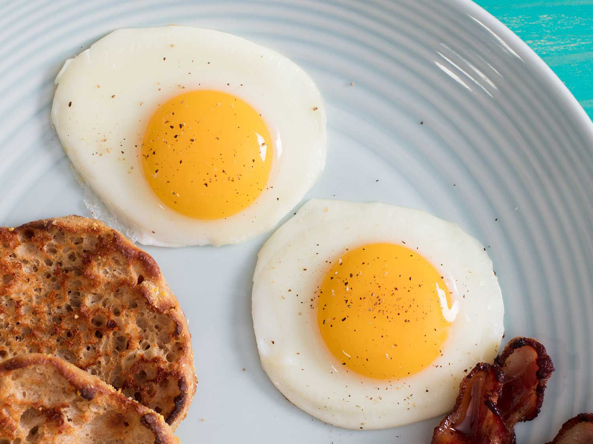

Fried Egg

Description
It is one of the most simple dishes in the world that you can find. Everyone can cook this with ease. Yet, it is cheap and nutritious. Get your favourite ketchup and enjoy this amazing meal!
Ingredients
- Chicken eggs
- Vegetable oil
- Salt
Steps
- Frist, add some oil into the pan
- Heat up the oil and crack the eggs into the pan
- Flip the eggs when the egg white turn from transparent to white
- Wait about 20 seconds and it is done